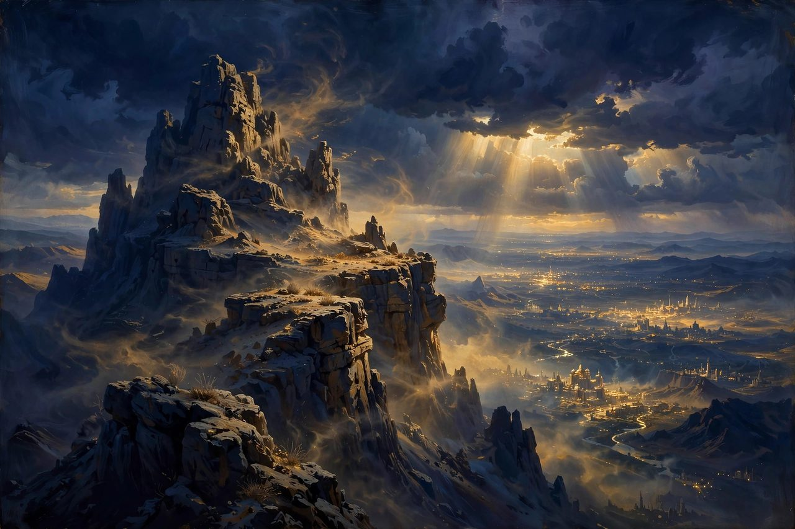
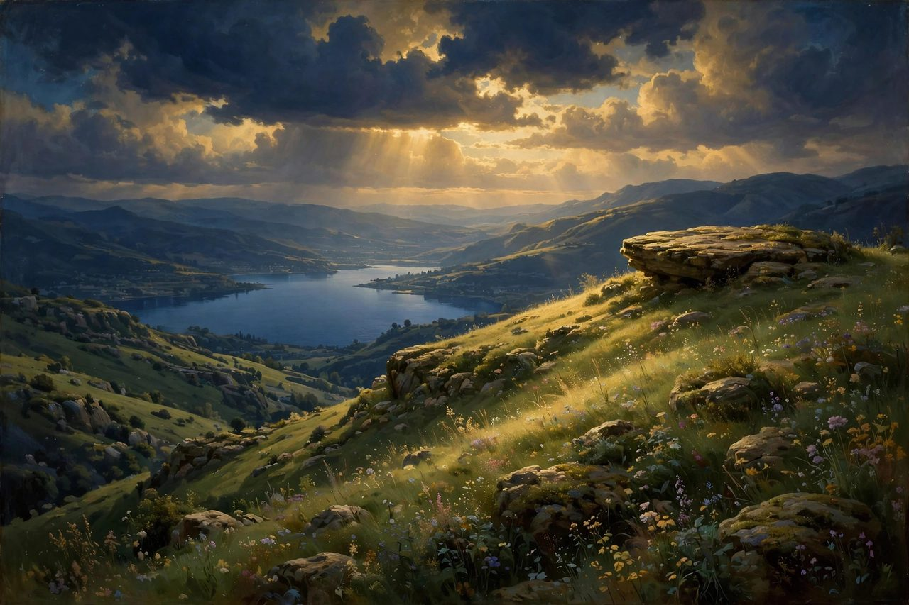
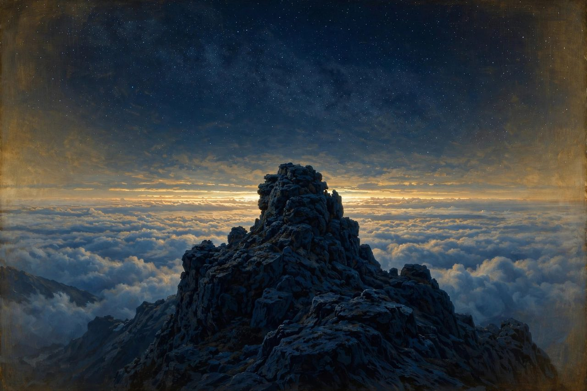
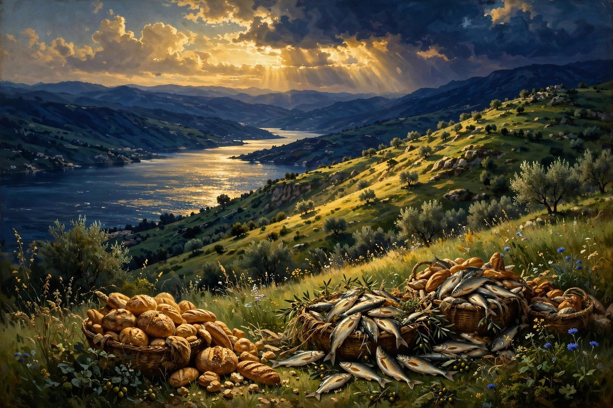
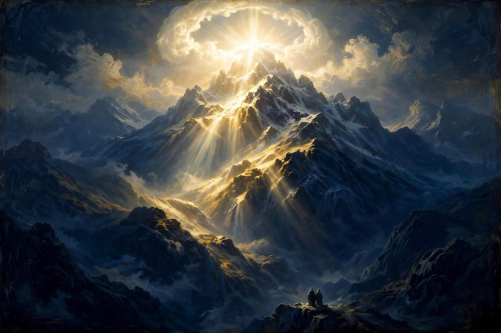
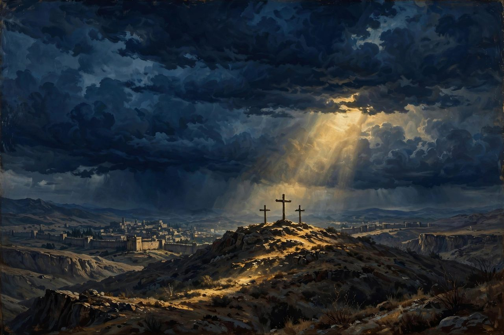
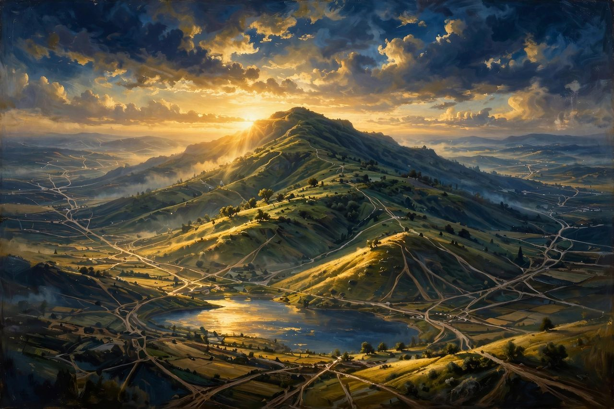
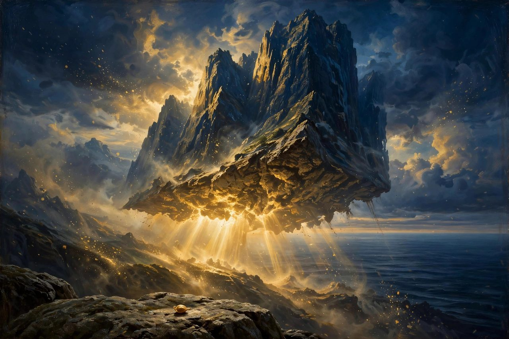
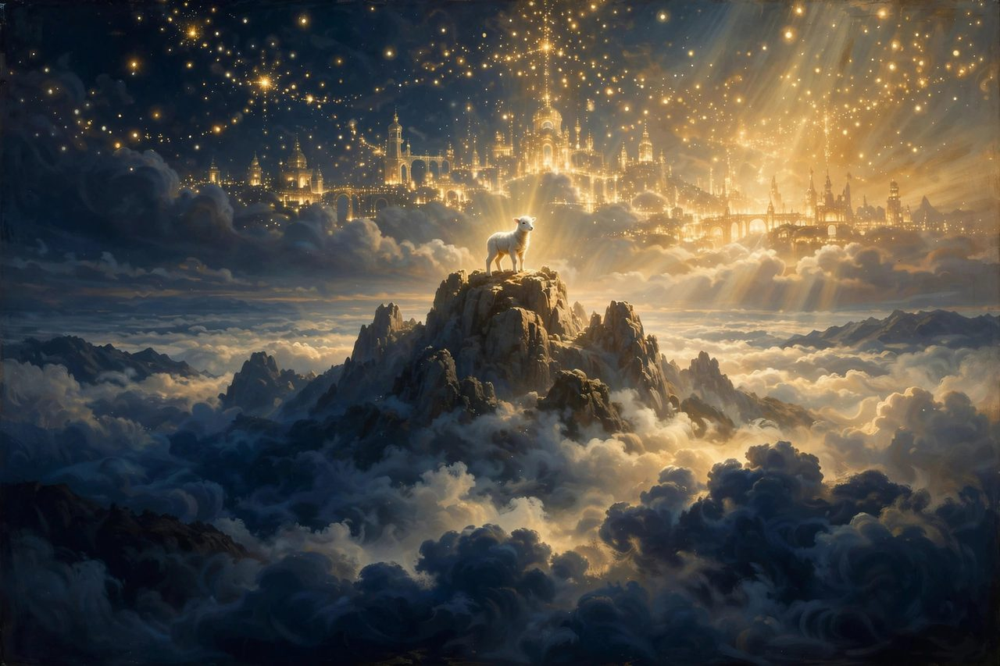

When Jesus comes, the mountains do not retire. He preaches from them, prays on them, feeds thousands on their slopes, and is transfigured on one in glory. But something shifts: in the Old Testament men climbed mountains to meet God, while in the New Testament God in the flesh keeps coming down them — to teach, to heal, to suffer, and finally to die on a hill outside the city wall.
The Mount of Temptation
Scripture: Matthew 4:8-10; Luke 4:5-8 The story: After forty days of fasting in the wilderness, the devil took Jesus up "to a very high mountain" and showed Him all the kingdoms of the world and their glory, offering them all in exchange for one act of worship. Jesus answered with Scripture — "You shall worship the Lord your God and him only shall you serve" — and the devil left Him. Scripture does not name the mountain; tradition associates it with the cliffs west of Jericho, sometimes called the Mount of Quarantania. The meaning: God cannot be bought, and His Son would not take a shortcut to the kingdom. The crown would come only by the cross, at the Father's timing and by the Father's way. What it points to: It points to the human condition — every one of us is offered the kingdoms of this world at the price of compromise, and only Christ refused the deal. It also points forward to the day every knee bows to Him freely, because He first refused to take by bargain what the Father would give by resurrection.
The Mountain of the Sermon on the Mount

Scripture: Matthew 5:1; Matthew 5-7 The story: Seeing the crowds, Jesus "went up on the mountain, and when he sat down, his disciples came to him," and He taught the Sermon on the Mount — the Beatitudes, the Lord's Prayer, the narrow gate, and the house built on the rock. Matthew never names the mountain; tradition places it on the hills above the Sea of Galilee near Capernaum. The meaning: A new Moses ascends a mountain and gives a greater law — not one that merely governs outward acts, but one that reaches anger, lust, enemies, and the secret places of the heart. God is not lowering His standard on this mountain; He is raising it beyond what flesh can perform, so that we run to His mercy. What it points to: It points forward to Christ Himself as the only Man who ever lived this sermon, and to the church as the people being remade in His image. Every hearer leaves this mountain in one of two places: building on the rock of His words, or on the sand of hearing without doing.The Mountain of Prayer

Scripture: Matthew 14:23; Mark 6:46; Luke 6:12; Luke 9:28 The story: Again and again Jesus withdrew to the mountains alone to pray — after feeding crowds He "went up on the mountain by himself to pray," and before choosing the Twelve He "went out to the mountain to pray, and all night he continued in prayer to God" (Luke 6:12). It was also on the way up a mountain to pray that the Transfiguration took place. The meaning: If the Son of God, in perfect fellowship with the Father, still sought lonely heights and whole nights for prayer, then prayer is not a backup plan for the weak — it is the very lifeblood of obedience. The mountain of prayer stands behind every public miracle in His ministry. What it points to: It points to the human race's deepest need and neglect: we scramble for mountaintop experiences and skip the mountaintop prayer that gives them meaning. It points forward to Christ's present ministry, for He still intercedes — the praying that began on Galilean hillsides continues at the right hand of the Father.The Mountain of Feeding

Scripture: Matthew 15:29-38; John 6:3, 15 The story: Twice Jesus fed multitudes on mountainsides — the five thousand in Galilee, and the four thousand after going up on a mountain near the Sea of Galilee where the lame, the blind, and the mute were laid at His feet and healed. After the first feeding, perceiving that the crowd "were about to come and take him by force to make him king," Jesus withdrew again to the mountain by Himself (John 6:15). The meaning: God feeds His people in the wilderness, as He did with manna, and He does it with leftovers to spare — twelve baskets, then seven. He is not a God of barely enough. What it points to: It points to the Bread of Life Himself, for Jesus used the feeding to declare, "I am the bread of life" (John 6:35). It also exposes the human heart: we would gladly crown a king who fills our stomachs, but He will not be used — He withdraws from every attempt to make Him king on our terms rather than His.The Mount of Transfiguration

Scripture: Matthew 17:1-9; Mark 9:2-8; Luke 9:28-36; 2 Peter 1:16-18 The story: Six days after promising that some standing there would see the kingdom come with power, Jesus took Peter, James, and John up a high mountain, and "his face shone like the sun, and his clothes became white as light." Moses and Elijah appeared, talking with Him about His coming departure, and the Father's voice came from the cloud: "This is my beloved Son, with whom I am well pleased; listen to him." Peter later called it "the holy mountain" and insisted, "we were eyewitnesses of his majesty" (2 Peter 1:18). Scripture does not name the mountain: church tradition points to Mount Tabor, though many scholars favor Mount Hermon, since Jesus was near Caesarea Philippi at the time. The meaning: For one moment the veil was pulled back and the disciples saw who Jesus actually is — not a mere teacher, but the radiant Son, greater than the Law (Moses) and the Prophets (Elijah) combined. God's testimony about His Son is the loudest word spoken on any mountain in this document. What it points to: It points forward to the resurrection and to Christ's glory unveiled at His return, and it anchors the believer's hope: the Man who would be crucified within the year is the same Man heaven calls beloved. It also points to our own future, for those in Christ will be changed into His likeness — the glory glimpsed on the mountain is a preview, not an exception.The Mount of Olives
 Scripture: Matthew 21:1; Matthew 24-25; Luke 19:29-44; Luke 22:39-46; Acts 1:9-12
The story: The low ridge east of Jerusalem, across the Kidron Valley, runs through the whole last week of Jesus's life. From it He sent for the colt and entered the city in triumph; on its slope He wept over Jerusalem — "Would that you... had known on this day the things that make for peace!" (Luke 19:42). There He delivered the Olivet Discourse about the destruction of Jerusalem and His own return; at its foot, in Gethsemane, He prayed in agony until His sweat became like drops of blood; and from the Mount of Olives, forty days after the resurrection, He ascended into heaven while the angels promised, "this Jesus... will come in the same way as you saw him go" (Acts 1:11).
The meaning: This mountain teaches that God's King both weeps over the city that rejects Him and will return to the very place of His departure. Judgment and tears stand side by side in the heart of God — He takes no pleasure in the ruin of the rebellious.
What it points to: It points backward to David, who crossed the same valley and climbed the same mount weeping when betrayed by his own household (2 Samuel 15), and forward to Zechariah's prophecy that the LORD's feet shall stand on this very mountain on the last day (Zechariah 14:4). The Ascension turned Olivet into a standing appointment: He left from there, and there He will return.
Scripture: Matthew 21:1; Matthew 24-25; Luke 19:29-44; Luke 22:39-46; Acts 1:9-12
The story: The low ridge east of Jerusalem, across the Kidron Valley, runs through the whole last week of Jesus's life. From it He sent for the colt and entered the city in triumph; on its slope He wept over Jerusalem — "Would that you... had known on this day the things that make for peace!" (Luke 19:42). There He delivered the Olivet Discourse about the destruction of Jerusalem and His own return; at its foot, in Gethsemane, He prayed in agony until His sweat became like drops of blood; and from the Mount of Olives, forty days after the resurrection, He ascended into heaven while the angels promised, "this Jesus... will come in the same way as you saw him go" (Acts 1:11).
The meaning: This mountain teaches that God's King both weeps over the city that rejects Him and will return to the very place of His departure. Judgment and tears stand side by side in the heart of God — He takes no pleasure in the ruin of the rebellious.
What it points to: It points backward to David, who crossed the same valley and climbed the same mount weeping when betrayed by his own household (2 Samuel 15), and forward to Zechariah's prophecy that the LORD's feet shall stand on this very mountain on the last day (Zechariah 14:4). The Ascension turned Olivet into a standing appointment: He left from there, and there He will return.
Golgotha / Calvary

Scripture: Matthew 27:33-37; John 19:17-18 The story: Golgotha — "the place of a skull" — was not a great peak at all but a hill outside Jerusalem's wall, where Jesus was crucified between two criminals, bearing His own cross to the place of execution. There He cried, "It is finished," and gave up His spirit. Tradition holds the site within what is now the Church of the Holy Sepulchre; its exact location is not certain, and Scripture's concern is the event, not the elevation. The meaning: The most important mountain in human history is barely a hill — because God's glory is not measured in altitude. On this small rise outside the wall, the sin of the world was carried, judged, and paid for in full by the Lamb of God. What it points to: It points straight back to Moriah, where God stayed Abraham's hand and provided a ram, and promised that on the mount of the LORD it would be provided. At Golgotha the pattern completed: this time God did not spare His own Son, and the Lamb God provided was God Himself in the flesh. Every other mountain in this document exists to lead the reader to this one.The Mountain in Galilee of the Great Commission

Scripture: Matthew 28:10, 16-20 The story: The risen Jesus told the women at the tomb, "go and tell my brothers to go to Galilee, and there they will see me." The eleven disciples went "to the mountain to which Jesus had directed them," and when they saw Him "they worshiped him, but some doubted." To that mixed company — worshippers and doubters on the same mountainside — He gave the Great Commission: "All authority in heaven and on earth has been given to me. Go therefore and make disciples of all nations." The meaning: The risen Christ does not wait for perfect faith before He gives His mission; He commissions doubters, because the authority is His, not theirs. God's great work in the world is carried by ordinary, wavering people holding a promise: "I am with you always, to the end of the age." What it points to: It points forward to the church's whole history — every sermon, every missionary journey, every baptism traces back to this unnamed Galilean mountain. It also points to the human condition with honesty: even eyewitnesses of the resurrection can worship and doubt in the same breath, and Christ shepherds both.Faith That Moves Mountains

Scripture: Matthew 17:20; Matthew 21:21; Mark 11:23; 1 Corinthians 13:2 The story: This entry is not a place but a teaching Jesus returned to more than once. To disciples who could not cast out a demon, He said that faith "like a grain of mustard seed" would say to a mountain, "Move from here to there," and it would move; beside the withered fig tree He promised that whoever says to "this mountain, 'Be taken up and thrown into the sea,'" and does not doubt, will see it done. Paul takes up the image and adds the necessary guardrail: faith to remove mountains, without love, is nothing. The meaning: Jesus was not teaching landscaping — He was using the most immovable object His hearers knew to say that no obstacle stands against the God who is trusted. The emphasis is not on the size of our faith (a mustard seed is tiny) but on the greatness of the God in whom that small faith rests. What it points to: It points to the human condition — we measure problems by mountains and faith by feelings, when God measures both by Himself. Properly understood, it does not promise that God will rearrange circumstances on demand; it promises that the believer who prays in faith and love will never face a mountain God cannot move, including the last one, death itself.Mount Zion, Heavenly

Scripture: Hebrews 12:18-24; Revelation 14:1 The story: Hebrews sets two mountains side by side. "You have not come to a mountain that can be touched" — blazing Sinai, where even Moses trembled — "but you have come to Mount Zion and to the city of the living God, the heavenly Jerusalem," to angels in festal gathering, to the assembly of the firstborn, "and to Jesus, the mediator of a new covenant." John then sees the fulfillment: "I looked, and behold, on Mount Zion stood the Lamb, and with him 144,000 who had his name and his Father's name written on their foreheads" (Revelation 14:1). The meaning: The story of God's mountains reaches its summit here: access. Sinai said "keep your distance"; Zion says "come near," because the blood of Jesus speaks a better word than the blood of Abel — pardon instead of vengeance. What it points to: It points forward to the believer's true address: even now, the church gathered in worship has already come to this mountain, and one day faith will give way to sight when the Lamb stands on Zion with all His redeemed around Him. It also gently corrects us — the mountain we are climbing toward is not a place we reach by effort, but a city we enter by grace.← Previous part · Series index · Next part →
The Hope Connection
Meeting others where they are in the Name of Jesus — testimony and teaching on the hope that holds.